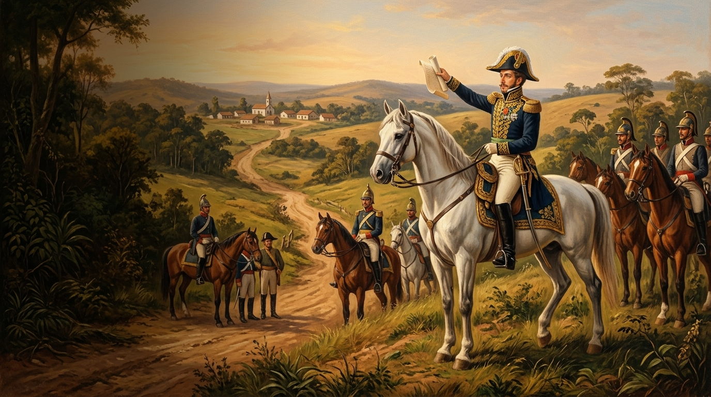
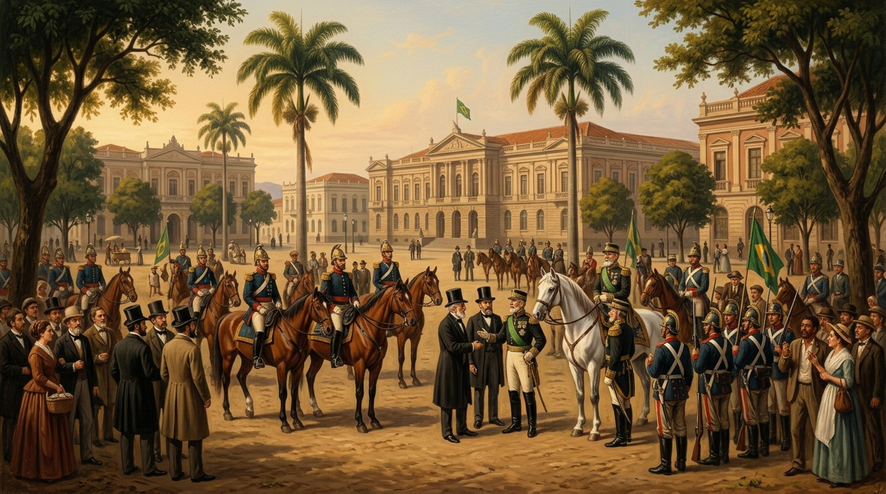
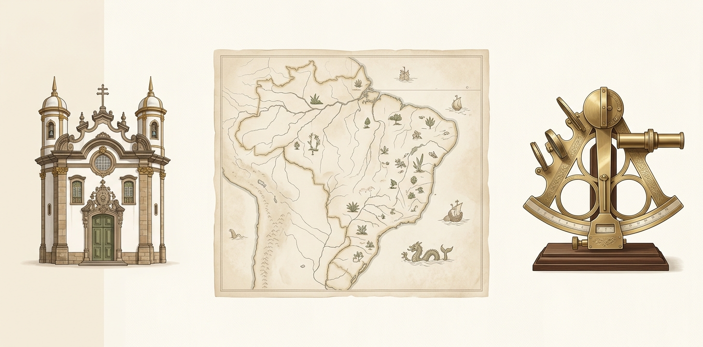

Povos indígenas
A diversidade cultural e as primeiras populações do território brasileiro.
Saiba maisA exposição História do Brasil apresenta os principais acontecimentos, personagens e períodos que ajudaram a formar o nosso país. São séculos de lutas, conquistas, culturas e transformações que mostram a diversidade e a força do povo brasileiro.
LINHA DO TEMPO
Povos indígenas e suas culturas
Colonização e período colonial
Independência do Brasil
Proclamação da República
Brasil moderno e contemporâneo
MOMENTOS MARCANTES
A diversidade cultural e as primeiras populações do território brasileiro.
Saiba maisA chegada dos portugueses e o início da exploração do território.
Saiba mais
O grito do Ipiranga marcou a independência e o fim do domínio português.
Saiba mais
O fim da monarquia e o início de um novo período político.
Saiba maisOs desafios e as conquistas do país no século XXI.
Saiba maisCURIOSIDADES

TABELA HISTÓRICA
| Período | Acontecimento | Data |
|---|---|---|
| Povos indígenas | Chegada dos primeiros habitantes | Antes de 1500 |
| Colonização | Chegada dos portugueses | 1500 |
| Independência | Grito do Ipiranga | 1822 |
| Império | Dom Pedro II e fim da escravidão | 1840 – 1889 |
| República | Proclamação da República | 1889 |
| Brasil contemporâneo | Redemocratização e Constituição de 1988 | 1988 – atualidade |
FONTES DE PESQUISA
Para conhecer mais sobre a história do Brasil, acesse as fontes abaixo: